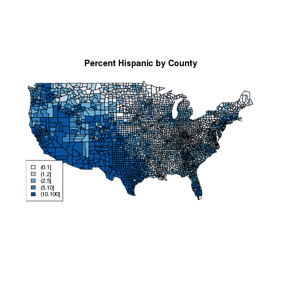
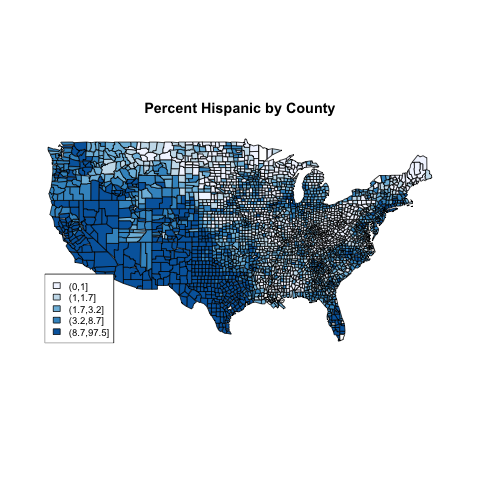
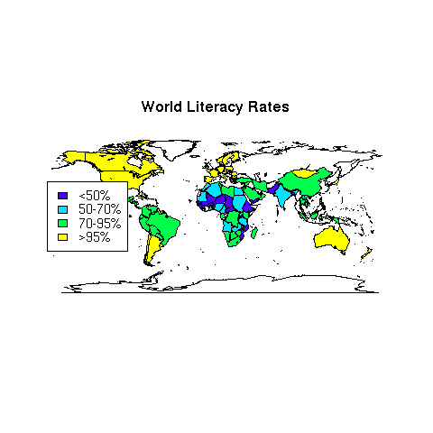
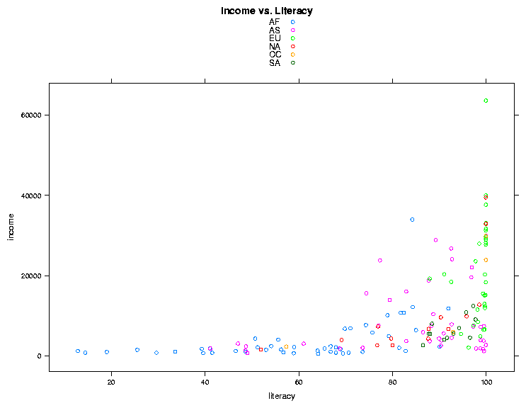
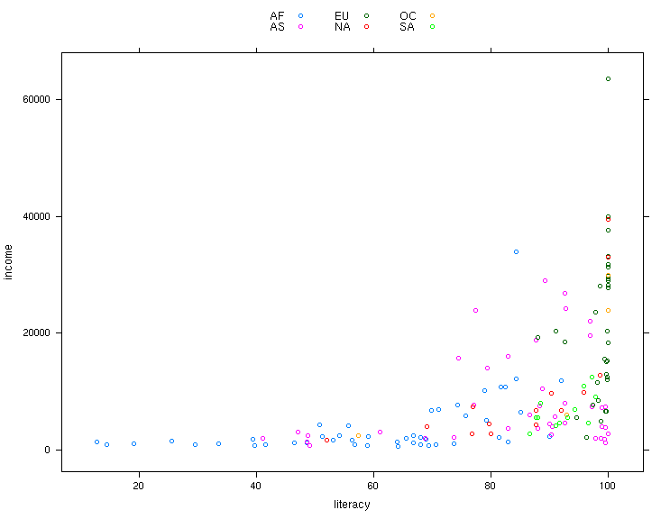
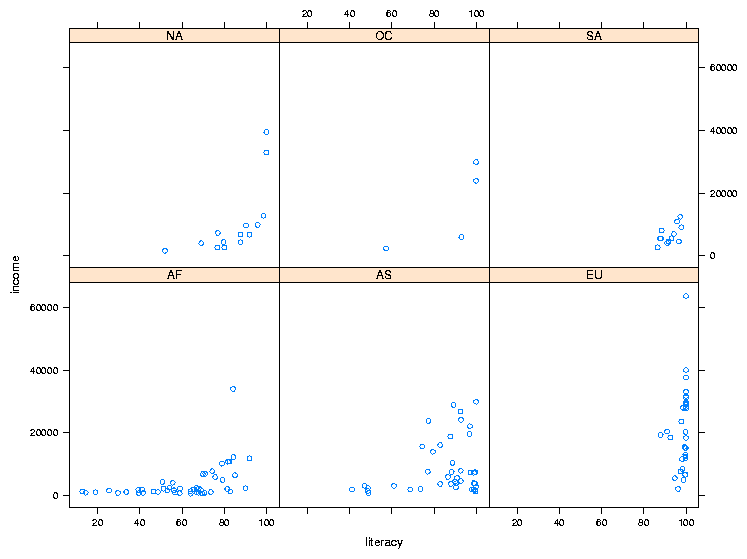
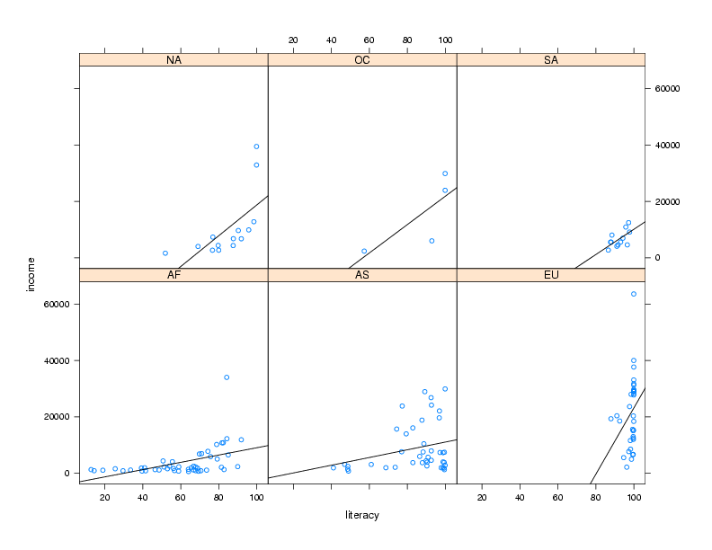
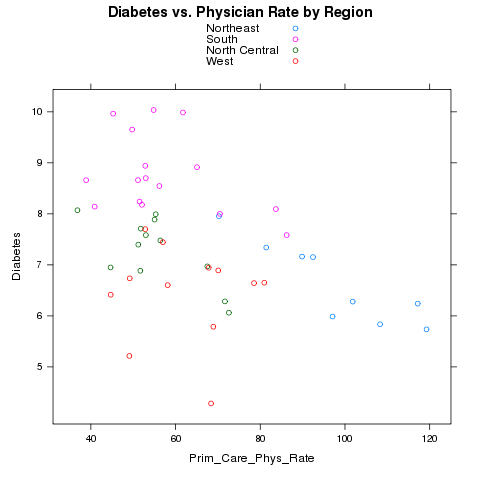
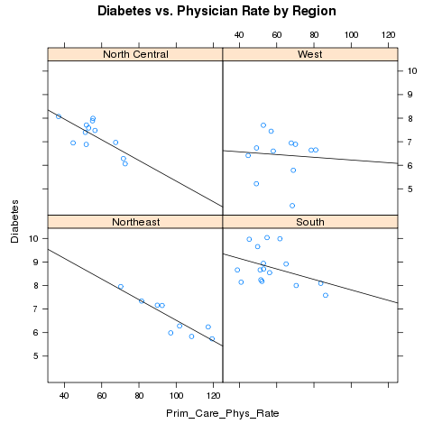

Mapping and Lattice Plots
As an example of using the county maps, we can use another one of the
Community Health data sets, this one concerned with demographics.
It's located at http://www.stat.berkeley.edu/classes/s133/data/DEMOGRAPHICS.csv.
The first step is to read the data into R. We'll concentrate on the
variable Hispanic, which gives the percentage of Hispanics in
each county.
> demo = read.csv('http://www.stat.berkeley.edu/classes/s133/data/DEMOGRAPHICS.csv')
> summary(demo$Hispanic)
Min. 1st Qu. Median Mean 3rd Qu. Max.
0.000 1.100 2.300 7.018 6.300 97.500
Next we need to see how the county names are stored in the county
map database:
> nms = map('county',names=TRUE,plot=FALSE)
> head(nms)
[1] "alabama,autauga" "alabama,baldwin" "alabama,barbour" "alabama,bibb"
[5] "alabama,blount" "alabama,bullock"
We need to combine the state and county information in our data
set so that it matches up with the format used in the database. We could
either call tolower now, or leave it to our mapgroups
function:
> head(subset(demo,select=c(CHSI_State_Name,CHSI_County_Name)))
CHSI_State_Name CHSI_County_Name
1 Alabama Autauga
2 Alabama Baldwin
3 Alabama Barbour
4 Alabama Bibb
5 Alabama Blount
6 Alabama Bullock
> thecounties = paste(demo$CHSI_State_Name,demo$CHSI_County_Name,sep=',')
Based on the summary information above, we can cut the Hispanic
variable at 1,2,5, and 10. Then we can create a pallete of blues using
the brewer.pal function from the RColorBrewer package.
> hgroups = cut(demo$Hispanic,c(0,1,2,5,10,100))
> table(hgroups)
hgroups
(0,1] (1,2] (2,5] (5,10] (10,100]
678 770 778 356 558
> library(RColorBrewer)
> mycolors = brewer.pal(5,'Blues')
> thecolors = mycolors[mapgroups('county',thecounties,hgroups)]
> map('county',col=thecolors,fill=TRUE)
> legend('bottomleft',levels(hgroups),fill=mycolors,cex=.8)
> title('Percent Hispanic by County')
The cex=.8 argument reduces the text size to 80% of
the default size, to prevent the legend from running into the map.
The map looks like this:

In previous examples, we created equal sized groups using the
quantile function. Let's see if it will make a difference
for this example:
> hgroups1 = cut(demo$Hispanic,quantile(demo$Hispanic,(0:5)/5))
> table(hgroups1)
hgroups1
(0,1] (1,1.7] (1.7,3.2] (3.2,8.7] (8.7,97.5]
678 597 627 618 620
The rest of the steps are the same as before:
> mycolors = brewer.pal(5,'Blues')
> thecolors = mycolors[mapgroups('county',thecounties,hgroups1)]
> map('county',col=thecolors,fill=TRUE)
> legend('bottomleft',levels(hgroups1),fill=mycolors,cex=.8)
> title('Percent Hispanic by County')
The plot, which is very similar to the previous plot,
appears below:

As a final example of working with maps, let's revisit the world data set
that we've used in other examples. Suppose we want to create a map showing
literacy rates around the world. First we need to decide on a grouping.
The summary function is useful in helping us
decide:
> world = read.csv('http://www.stat.berkeley.edu/classes/s133/data/world2.txt',na.strings='.',comment='#')
> summary(world$literacy)
Min. 1st Qu. Median Mean 3rd Qu. Max.
12.80 69.10 88.40 80.95 98.50 99.90
Let's create four levels: less than 50use cut to create these levels and label them at the same time:
litgroups = cut(world$literacy,breaks=c(0,50,70,95,100),include.lowest=TRUE,labels=c('<50%','50-70%','70-95%','>95%'))
We can use the mapgroups function to come up with the correct colors,
noticing that the region names in the world database are not in
lower case:
> mycolors = topo.colors(4)
> litcolors = mycolors[mapgroups('world',world$country,litgroups,tolower=FALSE)]
> map('world',col=litcolors,fill=TRUE)
> title('World Literacy Rates')
> legend('left',legend=levels(litgroups),fill=mycolors,cex=.9)
The map appears below

An alternative which is useful when you only want to use part of a database
is to eliminate missing values from the vector of colors and the corresponding
regions from the full list of regions, and pass those vectors directly to
map. Applying this idea to the previous example, we could have
gotten the same plot with statements like this:
> omit = is.na(litcolors)
> useregions = map('world',names=TRUE,plot=FALSE)[!omit]
> map('world',regions=useregions,col=litcolors[!omit],fill=TRUE)
1 The Lattice Plotting Library
The graphics we've been using up until now are sometimes known as
"traditional" graphics in the R community, because they are the basic
graphics components that have been part of the S language since its
inception. To review, this refers to the high-level functions like
plot, hist, barplot, plot,
pairs, and boxplot, the low-level functions like
points, lines, and legend, and the graphics
parameter system accessed through the par function. There's
another entire set of graphics tools available through the lattice
library.
Originally developed as the trellis library, the implementation in R is
known as lattice, although the name "trellis" persists in some
functions and documentation.
All of the functions in the lattice library use the
formula interface that we've seen in classification and modeling functions
instead of the usual list of x and y values. Along with other useful
features unique to each function, all of the lattice functions
accept a data= argument, making it convenient to work with dataframes;
by specifying the data frame name via this argument, you can refer to the
variables in the data frame without the data frame name. They also accept
a subset= argument, similar to the second argument to the
subset function, to allow selection of only certain cases when you
are creating a plot. Finally, the lattice plotting functions
can produce what are known as conditioning plots. In a conditioning plot,
several graphs, all with common scaling, are presented in a single display.
Each of the individual plots is constructed using observations that have a
particular value of a variable (known as the conditioning variable), allowing
complex relationships to be viewed more easily. To illustrate the idea,
let's revisit the income versus literacy graph that we looked at when we
first started studying graphics. The lattice equivalent of the
traditional plot command is xyplot. This function accepts
a plotting formula, and has some nice convenience functions not available in
the regular plot command. For example, the groups=
argument allows specifying a grouping variable; observations with different
levels of this variable will be plotted with different colors. The
argumentauto.key=TRUE automatically shows which colors represent
which groups. So we could create our graph with the single statement:
> library(lattice)
> world = read.csv('http://www.stat.berkeley.edu/classes/s133/data/world2.txt',comment='#',na.strings='.')
> xyplot(income ~ literacy,data=world,groups=cont,auto.key=TRUE,main='Income vs. Literacy'))
The plot is shown below.

One simple change we could make is to display the legend (created by
auto.key=TRUE) in 3 columns. This can be acheived by changing
the value of auto.key to auto.key=list(columns=3).
Many of the parameters to lattice functions can be changed by passing
a list of named parameters. Here's the updated call to lattice, and
the result:
> xyplot(income ~ literacy,data=world,groups=cont,auto.key=list(columns=3))

If you wish to finetune the appearance of lattice plots, you can modify most
aspects of lattice plots
through the command trellis.par.set, and you can display the
current values of options with the command trellis.par.get.
To explore possible modifications of the trellis (lattice) environment,
take a look at the output from
> names(trellis.par.get())
Any of the listed parameters can be changed through the
trellis.par.set() command.
To illustrate the idea of a conditioning plot, let's create a scatter plot
like the previous one, but, instead of using color to distinguish among the
continents, we'll use the continent as a conditioning variable, resulting in
a separate scatter plot for each continent. To use a conditioning variable
in any of the lattice commands, follow the formula with a vertical
bar (|) and the name of the conditioning variable. To get
xyplot to display the value of the conditioning variable, it helps
if it's a factor:
> world$cont = factor(world$cont)
> xyplot(income ~ literacy | cont,data=world)
The plot is shown below:

2 Customizing the Panel Function
One of the basic concepts of lattice plots is the idea of a panel. Each
separate graph that is displayed in a multi-plot lattice graph is known as
a panel, and for each of the basic types of lattice plots, there's a function
called panel.plottype, where plottype is the type of plot
in question. For example, the function that actually produces the individual
plots for xyplot is called panel.xyplot. To do something
special inside the panels, you can pass your own panel function to the
lattice plotting routines using the panel= argument. Generally,
the first thing such a function would do is to call the default panel plotting
routine; then additional operations can be performed with functions
like panel.points, panel.lines, panel.text. (See
the help page for panel.functions to see some other possibilities.)
For example, in the income versus literacy plot, we might want to show the
best regression line that goes through the points for each continent, using
the panel.lmline function. Here's how we could construct and call
a custom panel function:
> mypanel = function(x,y,...){
+ panel.xyplot(x,y,...)
+ panel.lmline(x,y)
+ }
xyplot(income ~ literacy | cont,data=world,panel=mypanel)
The plot is shown below.

As another example, consider again the Community Health Data risk and
access to care data set. We want to see if there is a relationship between
the number of physicians in a state, and the rate of Diabetes in that state.
We'll read it in as before, aggregate it, and merge it with the
state regions.
> risk = read.csv('http://www.stat.berkeley.edu/classes/s133/data/RISKFACTORSANDACCESSTOCARE.csv')
> risk[risk==-1111.1] = NA
> avgs = aggregate(risk[,c('Diabetes','Prim_Care_Phys_Rate')],risk['CHSI_State_Name'
],mean,na.rm=TRUE)
> avgs = merge(avgs,data.frame(state.name,region=state.region),by.x='CHSI_State_Name',by.y=1)
Notice that I used the variable number instead of the name in the call
to merge. Let's first use color to represent the different regions.
> xyplot(Diabetes~Prim_Care_Phys_Rate,groups=region,data=avgs,auto.key=TRUE,main='Diabetes vs. Physician Rate by Region')
Here's the plot:

Alternatively, we could place each region in a separate panel, and display
the best fit regression line:
> mypanel = function(x,y,...){
+ panel.xyplot(x,y,...)
+ panel.lmline(x,y)
+ }
> xyplot(Diabetes~Prim_Care_Phys_Rate|region,data=avgs,main='Diabetes vs. Physician Rate by Region',panel=mypanel)
The plot appears below:

By default, the lattice functions display their panels from bottom to top
and left to right, similar to the way points are drawn on a scatterplot.
If you'd like the plots to be displaying going from top to bottom, use the
as.table=TRUE argument to any of the lattice plotting functions.
File translated from
TEX
by
TTH,
version 3.67.
On 1 Mar 2011, 20:27.